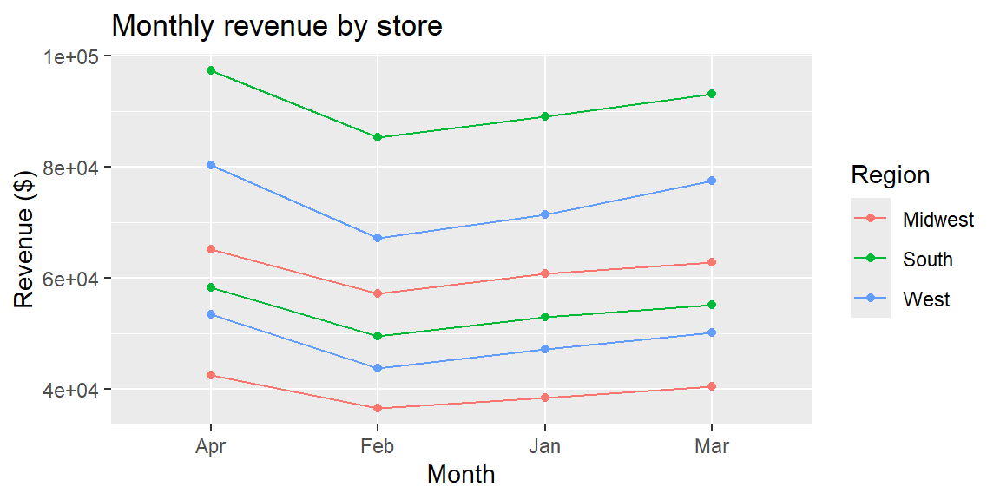

3Week 1: Importing Data, Identifying Variables, and Creating a Graph
3.1 Why This Matters
Before any analytical technique is useful, you need to get a dataset into your software, understand what each row and column actually represents, and look at it visually. These three skills—importing, identifying, and graphing—are the mechanical starting point of every module in this course, so it’s worth slowing down and doing them carefully here, before the pace picks up.
We’ll work with a single running example throughout this reading: readiness_store_sales.csv, which tracks four months of performance across six retail stores.
Column
Description
store_id
Unique identifier for the store
region
Region the store is located in (West, South, Midwest)
month
Month of the observation (Jan–Apr)
sq_ft
Store size, in square feet
units_sold
Number of units sold that month
revenue
Revenue that month, in dollars
3.2 Importing a Dataset
“Importing” simply means loading a data file—usually a CSV (comma-separated values) file—into the software you’re going to analyze it with. The file itself doesn’t change; you’re just bringing a copy of it into Excel or R so you can work with it.
In Excel
ExampleExample 1.3: Opening a CSV in Excel
Locate readiness_store_sales.csv on your computer.
Open Excel, then use File > Open and select the file (or simply double-click the file, which will open it directly in Excel).
Excel will display the file as a table: one column per variable, one row per observation, with the column names in the first row.
Select the data and choose Home > Format as Table so Excel treats it as a proper table rather than a loose range of cells. This makes later steps—sorting, filtering, charting—much easier.
In R
In R, importing a dataset means reading the file into an object—essentially, giving the dataset a name so you can refer to it in later code. We’ll use the read_csv() function from the tidyverse, a collection of R packages designed to work well together for data analysis.
# A tibble: 24 × 6
store_id region month sq_ft units_sold revenue
<dbl> <chr> <chr> <dbl> <dbl> <dbl>
1 101 West Jan 12000 2854 71350
2 101 West Feb 12000 2690 67250
3 101 West Mar 12000 3102 77550
4 101 West Apr 12000 3210 80250
5 102 West Jan 8500 1890 47250
6 102 West Feb 8500 1750 43750
7 102 West Mar 8500 2005 50125
8 102 West Apr 8500 2140 53500
9 103 South Jan 15000 3560 89000
10 103 South Feb 15000 3410 85250
# ℹ 14 more rows
The line sales <- read_csv(...) reads the file and stores it in an object named sales. Typing sales (or running a chunk containing just sales) prints it so you can see what was imported.
NoteA note on file paths
read_csv("data/readiness_store_sales.csv") tells R to look for a folder named datainside your current project folder, and for the file inside that folder. If R can’t find the file, the most common cause is that your Quarto document isn’t saved in the same project folder as the data folder. Keeping a consistent project folder structure now will save you real frustration later in the course.
3.3 Identifying the Observational Unit
Once a dataset is imported, the very first question to ask, before computing anything, is: what does one row represent? This is called the observational unit (sometimes called the unit of analysis). Every other decision about how to summarize, graph, or model the data depends on getting this right.
ExampleExample 1.5: Finding the observational unit
In R, glimpse() is a quick way to see the shape of a dataset: how many rows and columns it has, along with each column’s name, type, and a preview of its values.
The output shows 24 rows. Looking at the data, each row corresponds to one combination of store_id and month: for example, store 101 in January is one row, and store 101 in February is a different row. So the observational unit here is one store, in one month. Not “one store” (which would combine all four months together) and not “one month” (which would combine all six stores together).
Getting the observational unit wrong is a common source of mistakes. If you mistakenly treated each row as “one store” (ignoring that stores repeat across months), you might average revenue down to one number per store-month combination and then, without realizing it, treat multiple rows for the same store as though they were independent stores.
3.4 Identifying Variable Types
With the observational unit established, the next step is to classify each column. Two related distinctions matter most:
Categorical vs. quantitative: Does the variable place observations into named groups (categorical), or is it measured on a numeric scale (quantitative)?
Discrete vs. continuous (for quantitative variables only): Can the variable only take countable, distinct values (discrete), or can it take any value within a range (continuous)?
ExampleExample 1.6: Classifying the columns of `sales`
Column
Categorical or quantitative?
If quantitative: discrete or continuous?
store_id
Categorical (it labels a store; the numbers aren’t meant to be added or averaged)
—
region
Categorical
—
month
Categorical
—
sq_ft
Quantitative
Continuous (in principle, a store could be any size, even though these happen to be round numbers)
units_sold
Quantitative
Discrete (you can’t sell half a unit)
revenue
Quantitative
Continuous (dollars and cents can take any value within a range)
NoteWatch out for numeric-looking categorical variables
store_id is stored as a number, and R’s glimpse() may even show it with a numeric type. But storing something as a number doesn’t make it quantitative. Ask yourself: does it make sense to compute an average of this column? The average of revenue is meaningful. The average of store_id is not—it’s just a label. When in doubt, ask what the variable represents, not how it happens to be stored.
3.5 Creating One Graph
Once you know what a row represents and how each column is classified, you’re ready to look at the data visually. A single, well-chosen graph is often more informative than a page of numbers.
In Excel
ExampleExample 1.7: A simple chart in Excel
Select the month and revenue columns (hold Ctrl, or Cmd on a Mac, to select two non-adjacent columns).
Go to Insert > Charts and choose a line chart or clustered column chart.
Add a chart title and axis labels so the graph makes sense on its own, without needing the rest of the spreadsheet for context.
In R
We’ll use ggplot2 (part of the tidyverse) to build the graph. The basic idea behind ggplot2 is that you map variables in your data to features of the graph—an x-axis, a y-axis, a color—and then add a “geometry” that says how to draw it (points, lines, bars, and so on).
ExampleExample 1.8: A graph of revenue over time, by region
ggplot(sales, aes(x = month, y = revenue, color = region, group = store_id)) +geom_line() +geom_point() +labs(title ="Monthly revenue by store",x ="Month",y ="Revenue ($)",color ="Region" )

A few things to notice about this code:
aes(x = month, y = revenue, color = region, group = store_id) maps month to the horizontal axis, revenue to the vertical axis, region to color, and store_id to which points get connected by a line (since the observational unit is store-month, we need group to tell R to draw one line per store rather than connecting every point together).
geom_line() and geom_point() add the visual elements—lines connecting each store’s months, and points marking each observation.
labs() adds a title and clear axis labels, which is what turns a plot into a graph someone else can understand without you standing next to them.
NoteChoosing what to graph
Because the observational unit is store-month, a graph of revenue by month naturally produces one line per store, as in Example 1.8. If you wanted a single overall trend instead, you would first need to summarize—for instance, adding up revenue across all six stores for each month—before graphing. We’ll cover exactly this kind of summarizing in the next module.
3.6 Recap
Importing a dataset brings a copy of a data file into your software (Excel or R) so you can work with it; it does not change the original file.
The observational unit is what one row of the dataset represents. Identify it before doing anything else, since it shapes every summary, graph, and model that follows.
Variables are categorical (naming groups) or quantitative (measured on a numeric scale); quantitative variables are further discrete (countable) or continuous (any value in a range). A variable’s storage type (e.g., stored as a number) does not automatically make it quantitative—ask whether averaging it would be meaningful.
A single, clearly labeled graph is often the fastest way to understand a dataset, but the right graph depends on knowing the observational unit and variable types first.
3.7 Check Your Understanding
NoteProblems
A hospital dataset has one row for every patient visit, with columns for patient_id, department, visit_date, wait_time_minutes, and satisfaction_score (1–5). What is the observational unit?
For the hospital dataset in Problem 1, classify each of the five columns as categorical or quantitative, and for the quantitative ones, as discrete or continuous.
Suppose you import a dataset in R and running glimpse() shows a column called zip_code stored as a numeric type. Should you treat zip_code as a quantitative variable? Why or why not?
You want to create a graph in R showing how wait_time_minutes relates to department. Which variable would you map to the x-axis, and which to the y-axis?
TipSolutions
The observational unit is one patient visit—not one patient (since a patient could have multiple visits) and not one department.
patient_id: categorical (a label, not a measurement). department: categorical. visit_date: categorical (it identifies when a visit occurred, similar to a label, rather than something you’d average). wait_time_minutes: quantitative, continuous (wait time could in principle be any value, e.g., 12.5 minutes). satisfaction_score: quantitative, discrete (only the whole values 1 through 5 are possible)—though in practice, some analysts treat scores like this as categorical (ordinal) as well, since the numeric distance between categories isn’t always meaningful.
No. Even though zip_code is stored as a number, it functions as a label for a geographic area—computing an average zip code would be meaningless. It should be treated as categorical.
department (categorical) would typically go on the x-axis, and wait_time_minutes (quantitative) on the y-axis—for example, using a boxplot or bar chart to compare wait times across departments.